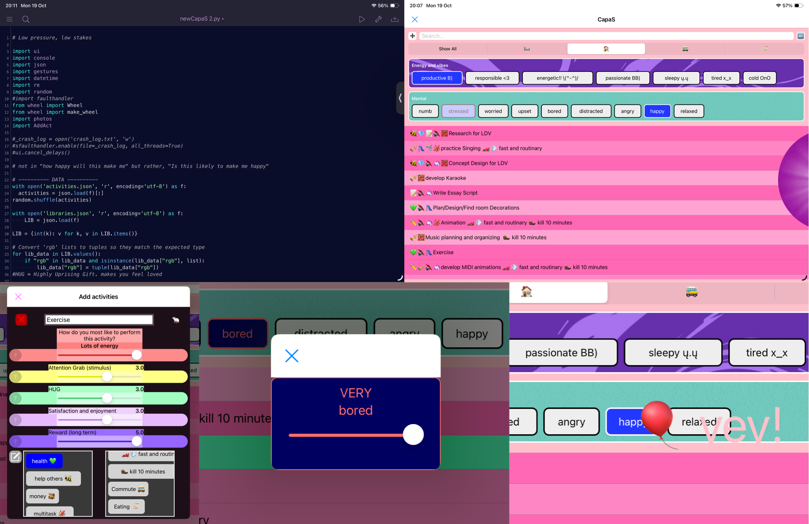
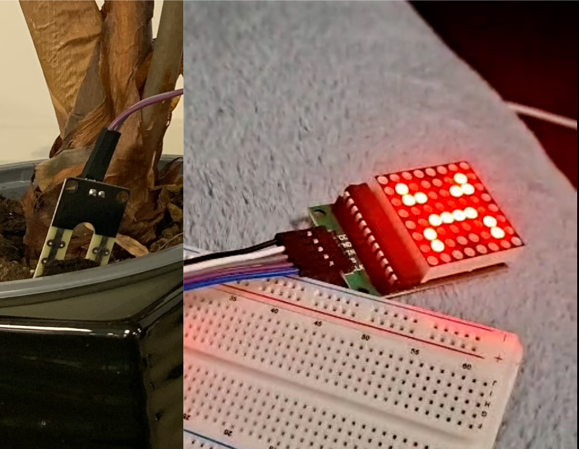
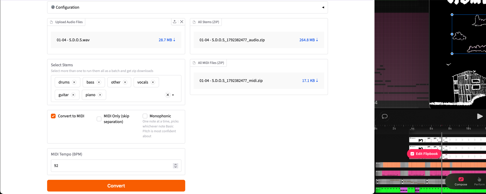

CapaS (Productivity/Mental health mobile App)
App Ideation & Design
UI/UX Design
Pythonista (mobile python)
Abbreviation for "Capacity Slider", CapaS is a productivity app that displays activities that match the user's current capacity using a filtration and activity raiting system. The app was created for myself when desiring to be productive but not knowing what was best for my current mood and resources.
Status: Fully functional. Active upgrades
Plantagochy


Arduino
Humidity Sensor
LED Display
Humidity monitoring system with LED display to mimic a tamagotchi. An angry face is displayed when humidity drops below a certain threshold.
MIDI animations


Stem Separation
Audio-to-MIDI
2D Animation
Gradio
Customized and extended an open-source Demucs/Basic Pitch audio pipeline (StemToMidi), implementing additional features for stem separation and audio-to-MIDI conversion, allowing near-perfect timing 2D animation synchronization by instrument.
StemToMidi by BizaNator
Liminal Vile
Audio Engineering
Mixing
Mastering
Audio engineering for music production.
Weather Dashboard
API Integration
Integrating weather API for real-time weather information.